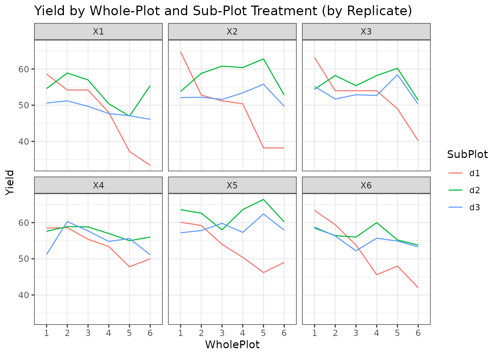
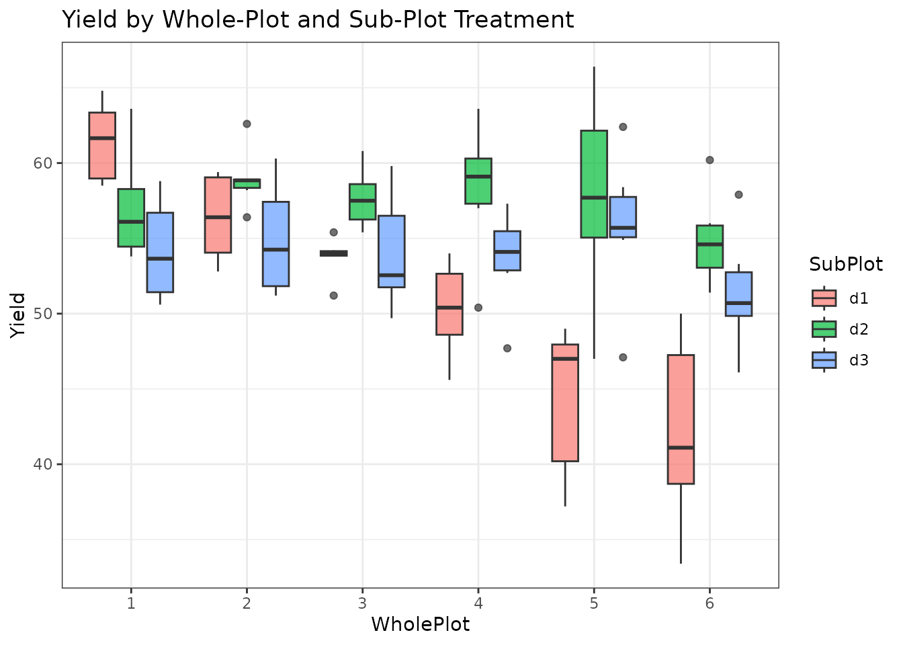
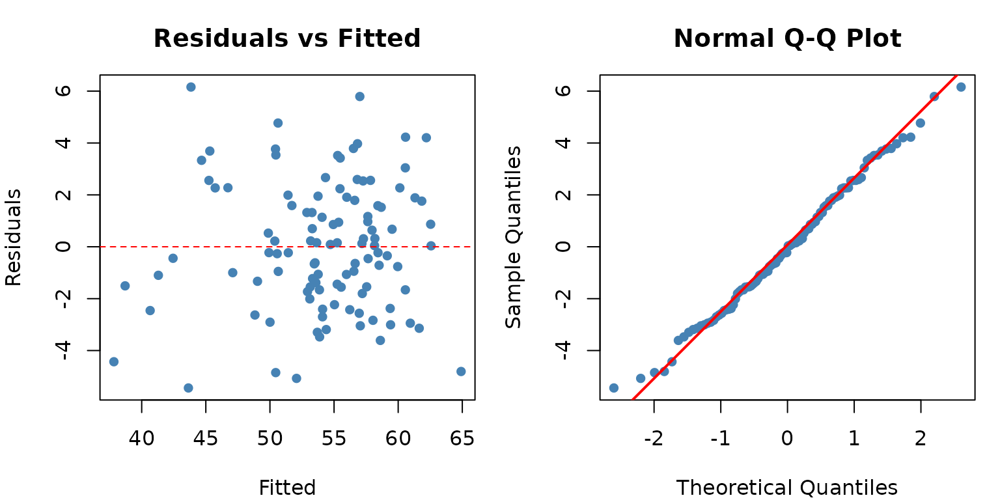
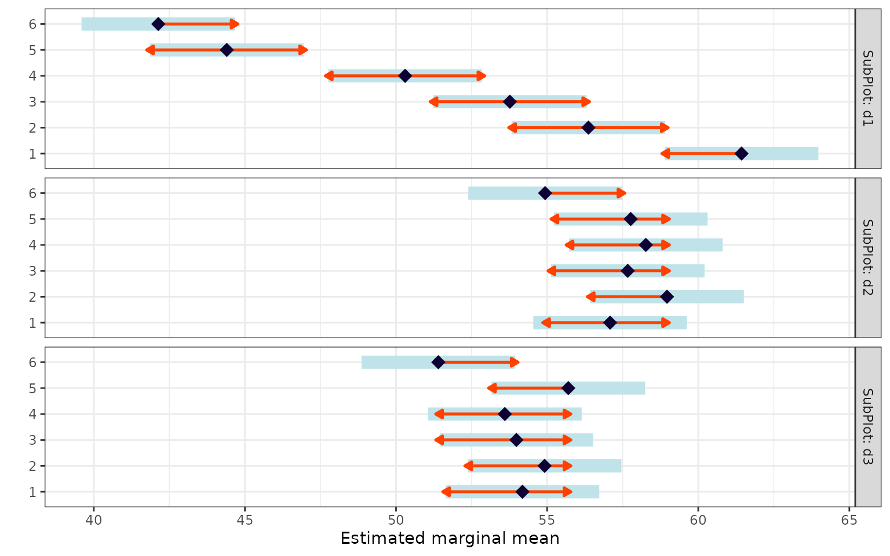
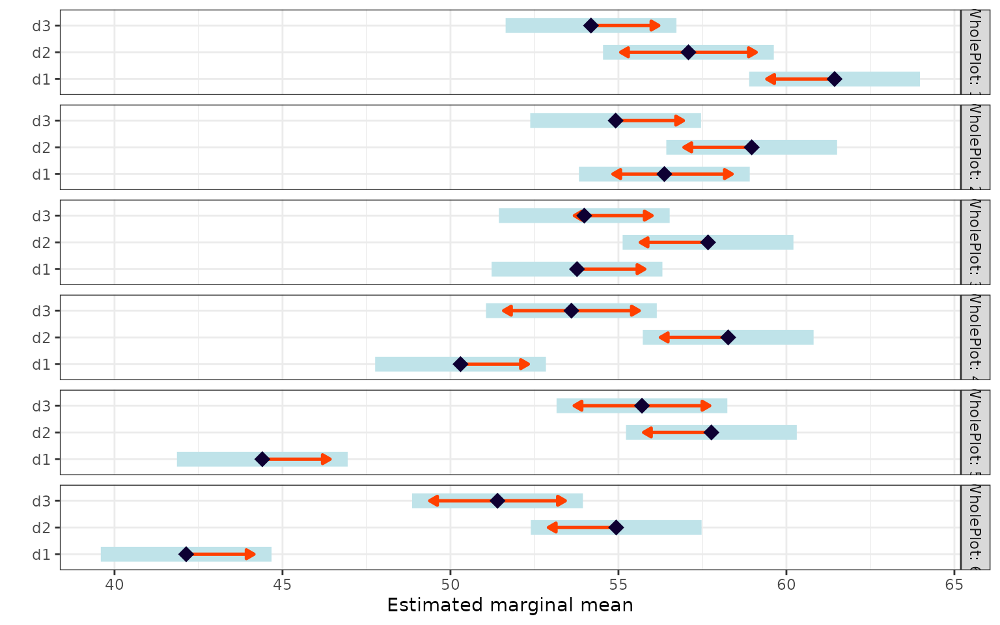

When to Use
The Split-Plot Design is used when:
- You have two treatment factors, but one is harder (or more expensive) to change than the other.
- The whole-plot factor is applied to larger units, and the sub-plot factor is applied within those units.
- Randomisation is restricted: the whole-plot factor is randomised first, then the sub-plot factor is randomised within each whole plot.
Common examples: irrigation method (whole-plot) x fertilizer type (sub-plot), or tillage system (whole-plot) x crop variety (sub-plot).
The Design
The split-plot design has two error terms:
where:
- = replicate (block) effect
- = whole-plot treatment effect
- = whole-plot error
- = sub-plot treatment effect
- = interaction
- = sub-plot error
This requires a mixed model because the whole-plot error is a random effect.
Data
We use a dataset with 6 whole-plot treatments, 3 sub-plot treatments, and 6 replicates.
library(agrideshr)
data(split_plot_data)
str(split_plot_data)
#> Classes 'tbl_df', 'tbl' and 'data.frame': 108 obs. of 4 variables:
#> $ Replicate: Factor w/ 6 levels "X1","X2","X3",..: 1 2 3 4 5 6 1 2 3 4 ...
#> $ WholePlot: Factor w/ 6 levels "1","2","3","4",..: 1 1 1 1 1 1 1 1 1 1 ...
#> $ SubPlot : Factor w/ 3 levels "d1","d2","d3": 1 1 1 1 1 1 2 2 2 2 ...
#> $ Yield : num 58.6 64.8 63.2 58.5 60.1 63.4 54.6 53.8 54.4 57.6 ...
head(split_plot_data, 12)
#> Replicate WholePlot SubPlot Yield
#> 1 X1 1 d1 58.6
#> 2 X2 1 d1 64.8
#> 3 X3 1 d1 63.2
#> 4 X4 1 d1 58.5
#> 5 X5 1 d1 60.1
#> 6 X6 1 d1 63.4
#> 7 X1 1 d2 54.6
#> 8 X2 1 d2 53.8
#> 9 X3 1 d2 54.4
#> 10 X4 1 d2 57.6
#> 11 X5 1 d2 63.6
#> 12 X6 1 d2 58.5Exploratory Visualization
library(ggplot2)
ggplot(split_plot_data, aes(x = WholePlot, y = Yield, colour = SubPlot,
group = SubPlot)) +
geom_line() +
facet_wrap(~ Replicate) +
theme_bw() +
labs(title = "Yield by Whole-Plot and Sub-Plot Treatment (by Replicate)")
ggplot(split_plot_data, aes(x = WholePlot, y = Yield, fill = SubPlot)) +
geom_boxplot(alpha = 0.7) +
theme_bw() +
labs(title = "Yield by Whole-Plot and Sub-Plot Treatment")
Model Fitting
Unlike the previous designs, split-plot requires a linear
mixed model using lmer() from the
lmerTest package. The term
(1 | Replicate:WholePlot) captures the whole-plot
error:
library(lmerTest)
fit <- lmer(Yield ~ Replicate + WholePlot * SubPlot + (1 | Replicate:WholePlot),
data = split_plot_data)ANOVA Table
anova(fit)
#> Type III Analysis of Variance Table with Satterthwaite's method
#> Sum Sq Mean Sq NumDF DenDF F value Pr(>F)
#> Replicate 423.44 84.69 5 25 10.019 2.359e-05 ***
#> WholePlot 530.26 106.05 5 25 12.547 3.705e-06 ***
#> SubPlot 663.31 331.66 2 60 39.238 1.269e-11 ***
#> WholePlot:SubPlot 942.58 94.26 10 60 11.152 1.839e-10 ***
#> ---
#> Signif. codes: 0 '***' 0.001 '**' 0.01 '*' 0.05 '.' 0.1 ' ' 1The F-tests use appropriate denominator degrees of freedom:
- WholePlot is tested against the whole-plot error.
- SubPlot and WholePlot:SubPlot are tested against the sub-plot (residual) error.
Variance Components
VarCorr(fit)
#> Groups Name Std.Dev.
#> Replicate:WholePlot (Intercept) 1.1544
#> Residual 2.9073Assumption Checking
For mixed models, we check residuals at the sub-plot level:
resid_vals <- residuals(fit)
fitted_vals <- fitted(fit)
par(mfrow = c(1, 2), mar = c(4, 4, 3, 1))
plot(fitted_vals, resid_vals,
xlab = "Fitted", ylab = "Residuals",
main = "Residuals vs Fitted", pch = 16, col = "steelblue")
abline(h = 0, lty = 2, col = "red")
qqnorm(resid_vals, main = "Normal Q-Q Plot", pch = 16, col = "steelblue")
qqline(resid_vals, col = "red", lwd = 2)
shapiro.test(resid_vals)
#>
#> Shapiro-Wilk normality test
#>
#> data: resid_vals
#> W = 0.99214, p-value = 0.7939Post-hoc Comparisons
Estimated Marginal Means
Whole-plot treatment within each sub-plot level
library(emmeans)
emm_a <- emmeans(fit, ~ WholePlot | SubPlot)
pairs(emm_a)
#> SubPlot = d1:
#> contrast estimate SE df t.ratio p.value
#> WholePlot1 - WholePlot2 5.067 1.81 78.6 2.805 0.0671
#> WholePlot1 - WholePlot3 7.667 1.81 78.6 4.245 0.0008
#> WholePlot1 - WholePlot4 11.133 1.81 78.6 6.165 <0.0001
#> WholePlot1 - WholePlot5 17.033 1.81 78.6 9.431 <0.0001
#> WholePlot1 - WholePlot6 19.300 1.81 78.6 10.686 <0.0001
#> WholePlot2 - WholePlot3 2.600 1.81 78.6 1.440 0.7029
#> WholePlot2 - WholePlot4 6.067 1.81 78.6 3.359 0.0148
#> WholePlot2 - WholePlot5 11.967 1.81 78.6 6.626 <0.0001
#> WholePlot2 - WholePlot6 14.233 1.81 78.6 7.881 <0.0001
#> WholePlot3 - WholePlot4 3.467 1.81 78.6 1.920 0.3982
#> WholePlot3 - WholePlot5 9.367 1.81 78.6 5.186 <0.0001
#> WholePlot3 - WholePlot6 11.633 1.81 78.6 6.441 <0.0001
#> WholePlot4 - WholePlot5 5.900 1.81 78.6 3.267 0.0194
#> WholePlot4 - WholePlot6 8.167 1.81 78.6 4.522 0.0003
#> WholePlot5 - WholePlot6 2.267 1.81 78.6 1.255 0.8081
#>
#> SubPlot = d2:
#> contrast estimate SE df t.ratio p.value
#> WholePlot1 - WholePlot2 -1.883 1.81 78.6 -1.043 0.9019
#> WholePlot1 - WholePlot3 -0.583 1.81 78.6 -0.323 0.9995
#> WholePlot1 - WholePlot4 -1.183 1.81 78.6 -0.655 0.9862
#> WholePlot1 - WholePlot5 -0.683 1.81 78.6 -0.378 0.9990
#> WholePlot1 - WholePlot6 2.150 1.81 78.6 1.190 0.8401
#> WholePlot2 - WholePlot3 1.300 1.81 78.6 0.720 0.9790
#> WholePlot2 - WholePlot4 0.700 1.81 78.6 0.388 0.9988
#> WholePlot2 - WholePlot5 1.200 1.81 78.6 0.664 0.9853
#> WholePlot2 - WholePlot6 4.033 1.81 78.6 2.233 0.2346
#> WholePlot3 - WholePlot4 -0.600 1.81 78.6 -0.332 0.9994
#> WholePlot3 - WholePlot5 -0.100 1.81 78.6 -0.055 1.0000
#> WholePlot3 - WholePlot6 2.733 1.81 78.6 1.513 0.6567
#> WholePlot4 - WholePlot5 0.500 1.81 78.6 0.277 0.9998
#> WholePlot4 - WholePlot6 3.333 1.81 78.6 1.846 0.4431
#> WholePlot5 - WholePlot6 2.833 1.81 78.6 1.569 0.6212
#>
#> SubPlot = d3:
#> contrast estimate SE df t.ratio p.value
#> WholePlot1 - WholePlot2 -0.733 1.81 78.6 -0.406 0.9985
#> WholePlot1 - WholePlot3 0.200 1.81 78.6 0.111 1.0000
#> WholePlot1 - WholePlot4 0.583 1.81 78.6 0.323 0.9995
#> WholePlot1 - WholePlot5 -1.517 1.81 78.6 -0.840 0.9591
#> WholePlot1 - WholePlot6 2.783 1.81 78.6 1.541 0.6391
#> WholePlot2 - WholePlot3 0.933 1.81 78.6 0.517 0.9954
#> WholePlot2 - WholePlot4 1.317 1.81 78.6 0.729 0.9778
#> WholePlot2 - WholePlot5 -0.783 1.81 78.6 -0.434 0.9980
#> WholePlot2 - WholePlot6 3.517 1.81 78.6 1.947 0.3819
#> WholePlot3 - WholePlot4 0.383 1.81 78.6 0.212 0.9999
#> WholePlot3 - WholePlot5 -1.717 1.81 78.6 -0.951 0.9318
#> WholePlot3 - WholePlot6 2.583 1.81 78.6 1.430 0.7085
#> WholePlot4 - WholePlot5 -2.100 1.81 78.6 -1.163 0.8530
#> WholePlot4 - WholePlot6 2.200 1.81 78.6 1.218 0.8267
#> WholePlot5 - WholePlot6 4.300 1.81 78.6 2.381 0.1757
#>
#> Results are averaged over the levels of: Replicate
#> Degrees-of-freedom method: kenward-roger
#> P value adjustment: tukey method for comparing a family of 6 estimates
Sub-plot treatment within each whole-plot level
emm_b <- emmeans(fit, ~ SubPlot | WholePlot)
pairs(emm_b)
#> WholePlot = 1:
#> contrast estimate SE df t.ratio p.value
#> d1 - d2 4.350 1.68 60 2.592 0.0317
#> d1 - d3 7.250 1.68 60 4.319 0.0002
#> d2 - d3 2.900 1.68 60 1.728 0.2033
#>
#> WholePlot = 2:
#> contrast estimate SE df t.ratio p.value
#> d1 - d2 -2.600 1.68 60 -1.549 0.2757
#> d1 - d3 1.450 1.68 60 0.864 0.6650
#> d2 - d3 4.050 1.68 60 2.413 0.0489
#>
#> WholePlot = 3:
#> contrast estimate SE df t.ratio p.value
#> d1 - d2 -3.900 1.68 60 -2.323 0.0602
#> d1 - d3 -0.217 1.68 60 -0.129 0.9909
#> d2 - d3 3.683 1.68 60 2.194 0.0803
#>
#> WholePlot = 4:
#> contrast estimate SE df t.ratio p.value
#> d1 - d2 -7.967 1.68 60 -4.746 <0.0001
#> d1 - d3 -3.300 1.68 60 -1.966 0.1295
#> d2 - d3 4.667 1.68 60 2.780 0.0196
#>
#> WholePlot = 5:
#> contrast estimate SE df t.ratio p.value
#> d1 - d2 -13.367 1.68 60 -7.963 <0.0001
#> d1 - d3 -11.300 1.68 60 -6.732 <0.0001
#> d2 - d3 2.067 1.68 60 1.231 0.4396
#>
#> WholePlot = 6:
#> contrast estimate SE df t.ratio p.value
#> d1 - d2 -12.800 1.68 60 -7.626 <0.0001
#> d1 - d3 -9.267 1.68 60 -5.521 <0.0001
#> d2 - d3 3.533 1.68 60 2.105 0.0973
#>
#> Results are averaged over the levels of: Replicate
#> Degrees-of-freedom method: kenward-roger
#> P value adjustment: tukey method for comparing a family of 3 estimates
Conclusion
The split-plot design is essential when practical constraints prevent full randomisation of all treatment combinations. Key points:
-
Mixed model is required (
lmer, notaov) to correctly partition the two error terms. - The whole-plot factor is tested with less precision (fewer effective replicates) than the sub-plot factor.
-
emmeans with conditional contrasts
(
~ A | B) is the appropriate way to make pairwise comparisons.
Design Summary
| Design | Vignette | Factors | Blocking | Model |
|---|---|---|---|---|
| CRD | 01 | 1 | None | aov(Y ~ A) |
| RCBD | 02 | 1 + Block | 1 blocking factor | aov(Y ~ Block + A) |
| Latin Square | 03 | 1 + Row + Col | 2 blocking factors | aov(Y ~ Row + Col + A) |
| Factorial | 04 | 2+ crossed | Optional | aov(Y ~ A * B) |
| Split-Plot | 05 | 2 nested | Replicates | lmer(Y ~ A*B + (1|Rep:A)) |